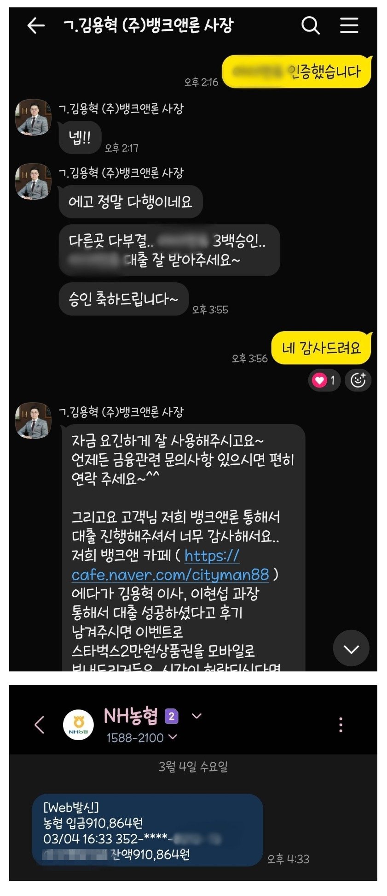

[개인회생자대출] 채무과다로 계속 대출 거절됐었는데 김용혁 이사님과 이현섭 과장님 덕분에 300만원 대출받았습니다!
재직형태: 직장인
재직기간: 21년 4월 입사
사대보험: 유
소득: 연봉 3500만
대출내역: 대부 2건, 저축은행 1건 (총 3000만원 정도)
변제금: 109만
23년 1월에 회생 접수해서
원래 이번달이 회생 36회차로 끝나는 거였는데
1,2월에 처음으로 미납해서 미납회차 1.91회였어요..
이번달에 제대로 낸다고 쳐도
5월은 되어야 끝날것 같아서..
작년 12월 중순에도 조회해본 업체에서 모두 부결나서
(거의 10곳 정도) 마음을 비우고 있었는데..
혹시나 해서 이사님께 연락드렸는데
35회차여서 될 수도 있겠다고 하셔서
요청하신 서류들 다 내고
조마조마한 마음으로 기다렸는데
역시나 처음 조회했던 세군데서 모두 대출과다로 부결나고
거의 포기하고 있었던 순간
미납금액 상환조건으로 300만원 승인받았어요.
이번달에 다 끝낼수 있게 되서
너무 감사하고 기뻤습니다ㅜ
미납금액 208만원 회생계좌로 입금된 후
차액 입금받았습니다.
면책 후 신용도 회복해서 다시 연락드릴께요 이사님

https://cafe.naver.com/cityman88/310345